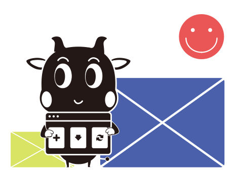

Resume
Graphic Design
UI/UX Design
Video Design
使用者介面 / 體驗
UI / UX DESIGN
專注於創造直觀且吸引人的使用者介面，並深入了解目標使用者的需求和行為，設計出提升用戶體驗的界面。

UI/UX Design︱Mobil APP︱SAVE MONEY
了解更多 ➜
UI/UX ︱Web Design︱TEJ AI Customer Service
了解更多 ➜
UI/UX ｜C.Soul｜打造即時模擬試穿的虛擬穿搭平台
了解更多 ➜
Website Optimization ｜TEJ Official Website
了解更多 ➜
UI/UX | Web Optimization | TQuant Lab
了解更多 ➜
Product Research︱UX Research︱Healing RPG
了解更多 ➜
0%
⇧